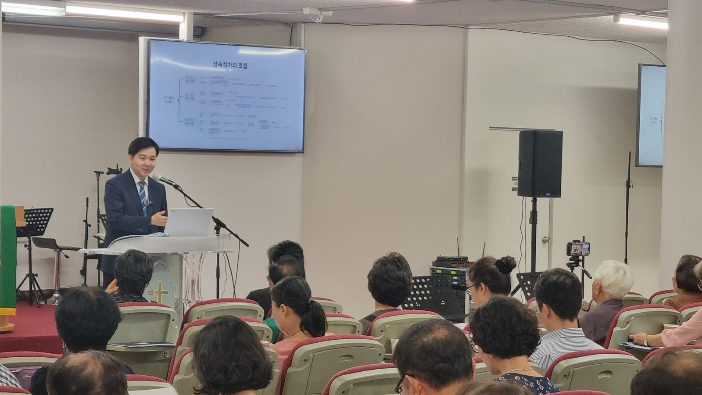
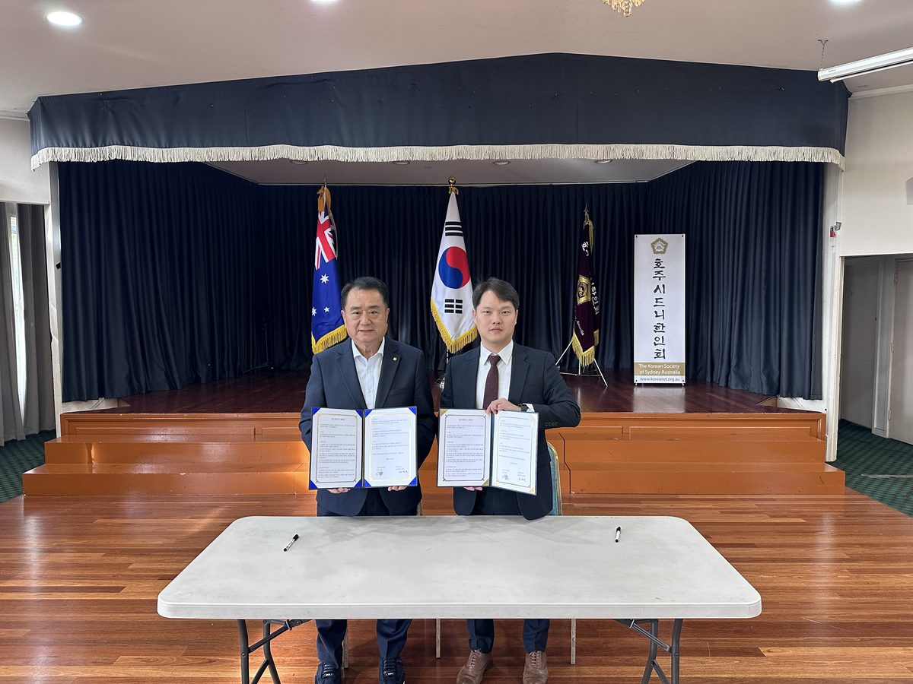
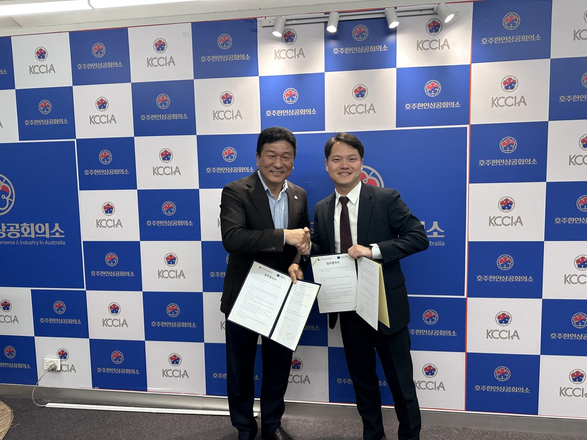
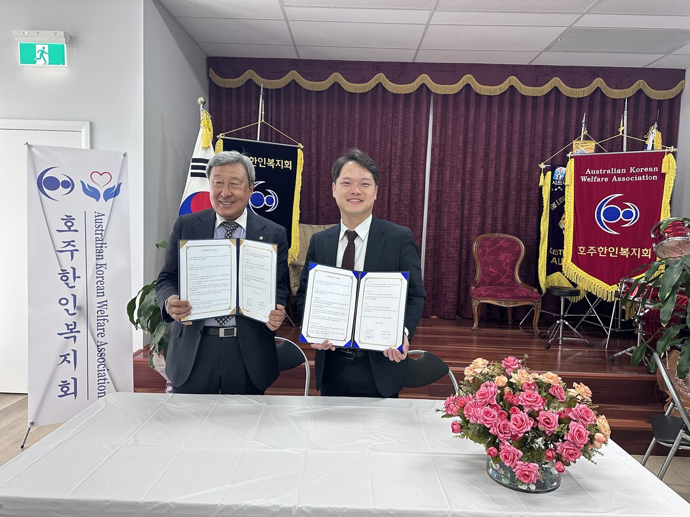
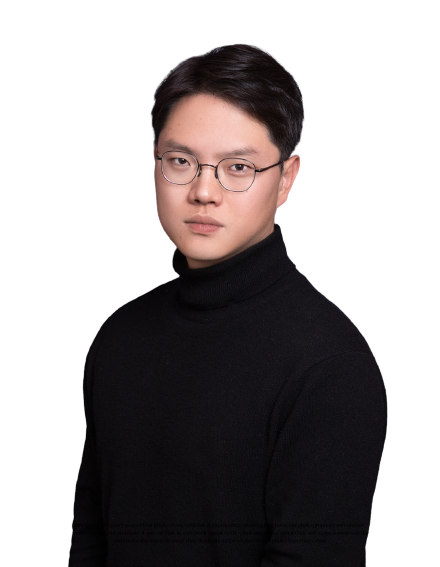
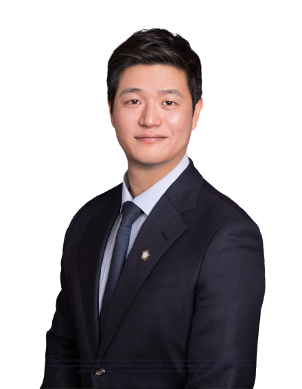
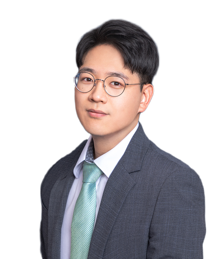
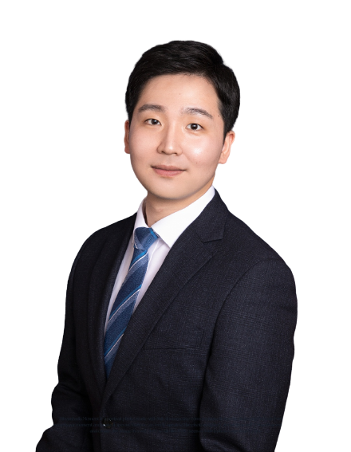

호주에 계셔도 한국의 재산은 한국법으로 상속됩니다.
그리고 기한은 기다려 주지 않습니다.


호주 한인회MOU 체결
시드니상공회의소MOU 체결
호주복지회MOU 체결호주 현지 세미나 2회 개최 · 호주 거주 의뢰인 사건 수행
한국에 계신 분들과는 상황이 다릅니다.
한국 소식은 늦게 전해집니다. 그런데 상속 기한은 그 사이에도 흘러가고 있습니다.
한국에 계신 형제분들이 협의를 진행합니다. 연락은 오지만 서류는 이미 넘어가 있습니다. 나중에 등기부를 떼어보고 알게 되는 경우가 있습니다.
한국 절차는 인감증명을 전제로 만들어져 있습니다. 호주에 계신 분은 인감이 없습니다. 무엇으로 대신해야 하는지 아는 것부터가 시작입니다.
부모님 채무는 저절로 사라지지 않습니다. 정해진 기간 안에 움직이지 않으면 호주에 계셔도 그대로 넘어옵니다.
해외에 계신 분들이 실제로 막혔던 지점과, 저희가 택한 방법입니다.
진행 중인 사건이 포함되어 있습니다.
호주에 거주하시던 분이 한국의 시중은행에 예금을 남기고 돌아가셨습니다. 배우자분이 예금을 찾기 위해 한국 은행을 두 차례 방문했습니다.
은행은 지급을 거절했습니다. 고인이 호주 시민권자이므로 한국법이 아니라 호주법에 따라 상속인임을 증명하라는 이유였습니다.
이후 은행은 예금 전액을 법원에 공탁했습니다. 호주법 해석의 부담을 지지 않으려는 조치였습니다. 유족이 공탁금 지급을 청구했으나 이번에는 법원이 받아들이지 않았습니다.
공탁관에게는 호주 상속법을 심사할 권한이 없으므로, 지급을 원한다면 판결로 상속인임을 확정받아 오라는 취지였습니다.공탁관 불수리 결정 취지
은행도 법원 창구도 판단을 하지 않는 상태였습니다. 호주 상속법을 한국 법정에서 증명하지 않는 한 예금을 찾을 방법이 없었습니다.
현재창구에서 반복 거절되던 사안을, 한국에 입국하지 않고 상속인 지위를 판결로 확정받는 절차로 전환해 소송을 진행하고 있습니다.
호주에서 사업을 하시는 교민께서 한국의 제조 공장에 물품 대금을 먼저 송금했습니다. 납기가 지나도 물건은 오지 않았고, 공장 측은 연락을 끊었습니다.
현지 경찰에 신고해도 한국에 있는 법인의 계좌에는 손을 댈 수 없었습니다. 당장 입국할 수도 없는 상황이었습니다. 상대방이 재산을 옮기면 나중에 판결을 받아도 회수할 것이 남지 않습니다.
현재호주에서는 손댈 수 없던 상대방의 한국 내 재산을 대상으로 보전 절차를 밟고 있습니다.
한국에 계시던 아버지가 채무를 남기고 돌아가셨습니다. 자녀 세 분은 모두 해외에 거주 중이었습니다.
빚의 상속을 막으려면 상속포기를 해야 하고, 이는 상속이 개시된 사실을 안 날부터 3개월 안에 마쳐야 합니다. 그런데 인감, 기본증명서, 위임장 등 관공서 서류를 해외에서 기한 내에 갖추는 일은 대리인 없이는 어렵습니다.
결과세 분 모두 입국하지 않고 3개월 기한 안에 상속포기를 마쳤습니다.
진행 중으로 표시된 사건은 아직 종결되지 않았으며, 기재된 내용은 현재까지의 경과일 뿐 결과가 확정된 것이 아닙니다. 위 내용은 실제 수임 사건을 의뢰인 특정이 불가능하도록 각색했습니다. 개별 사건은 사실관계와 증거에 따라 결론이 달라지며, 동일한 결과를 보장하지 않습니다.
상속은 기한이 지나면 되돌릴 수 없습니다.
서류를 준비하는 데만 몇 주가 걸립니다.
남은 기간이 얼마인지부터 확인하세요.
어디까지 가능한지 먼저 확인하세요.
상담 수단 · 카카오톡 보이스톡 / 페이스톡 · Zoom · Google Meet
호주 시간 기준으로 일정을 맞춥니다.
호주에 계신 분들이 가장 많이 물으시는 것들입니다.
상담부터 종결까지 소속 변호사가 직접 대응합니다.




호주 현지에서 상속 세미나를 두 차례 열었고, 호주에 거주하시는 의뢰인의 사건을 수행해 왔습니다.
부모님이 아직 건강하셔도, 지금 아무 일이 없어도
알아두면 나중에 달라집니다.